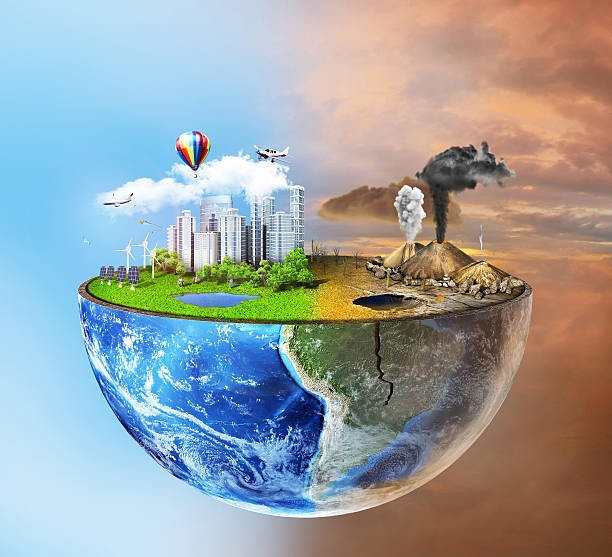
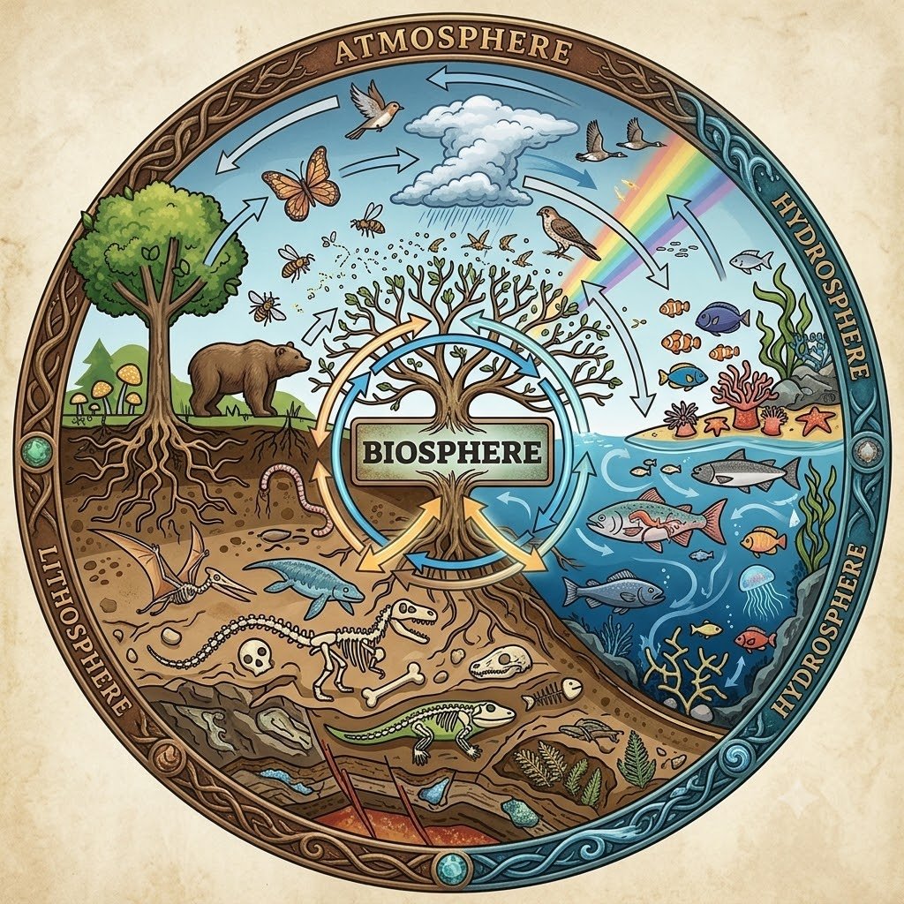
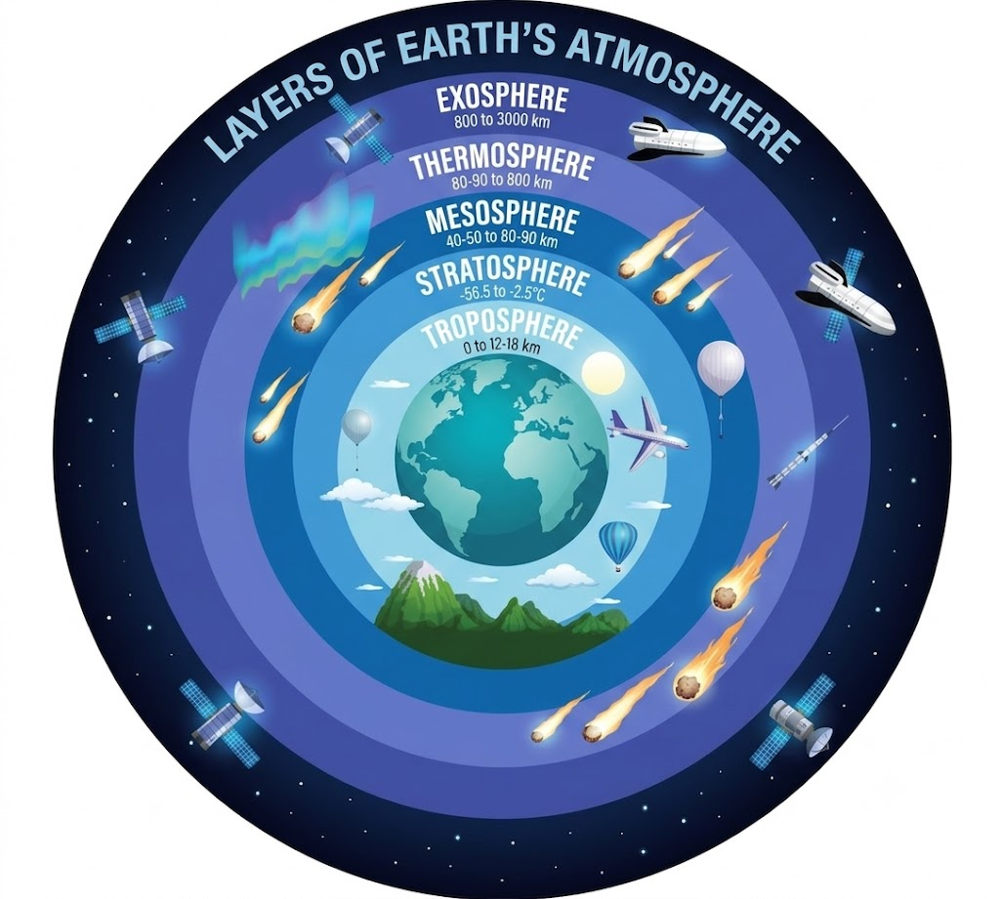
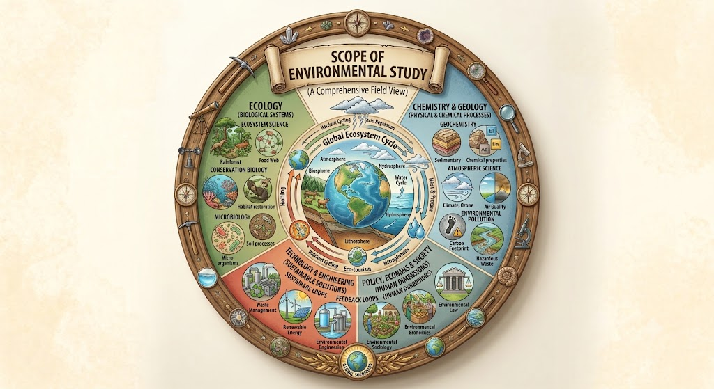
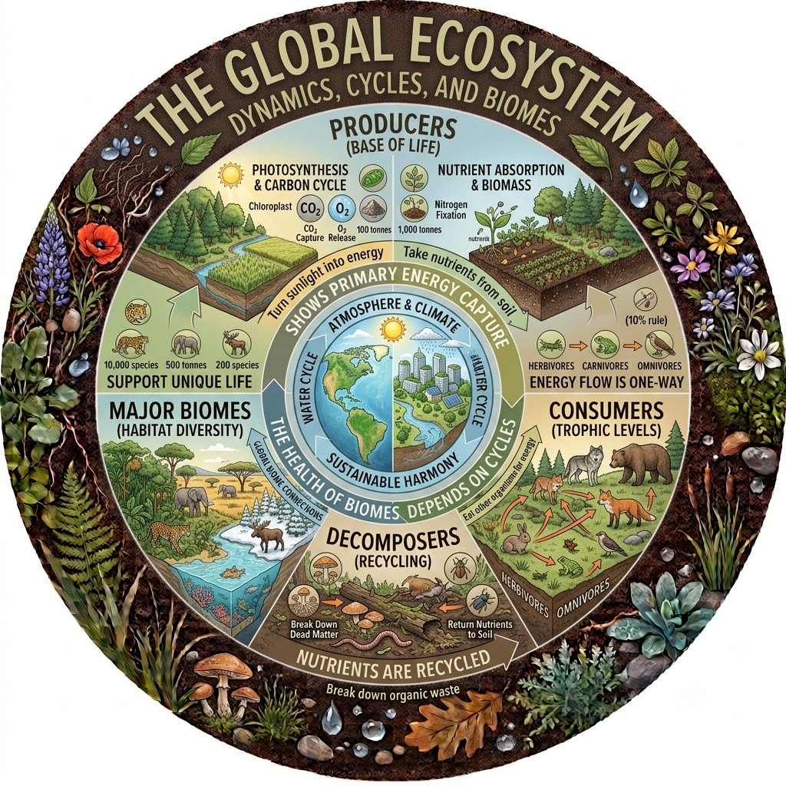
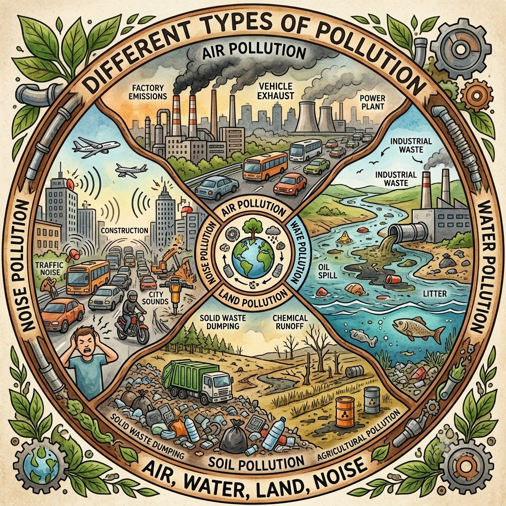
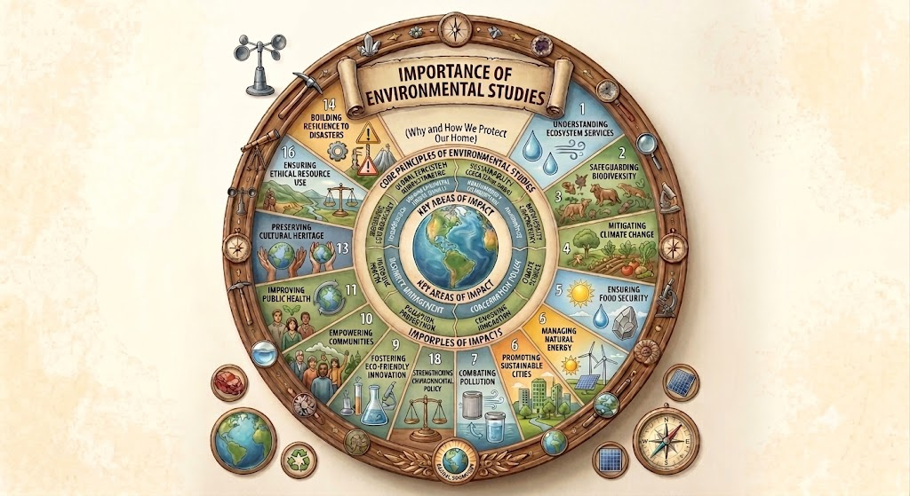
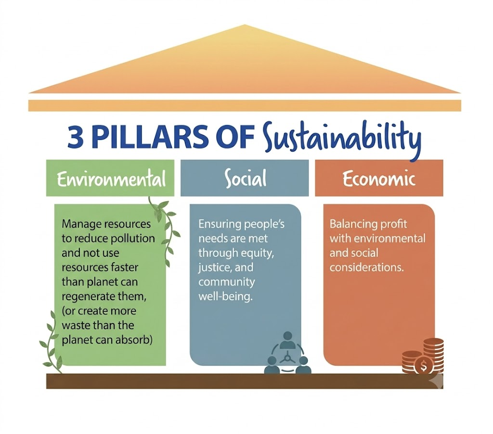
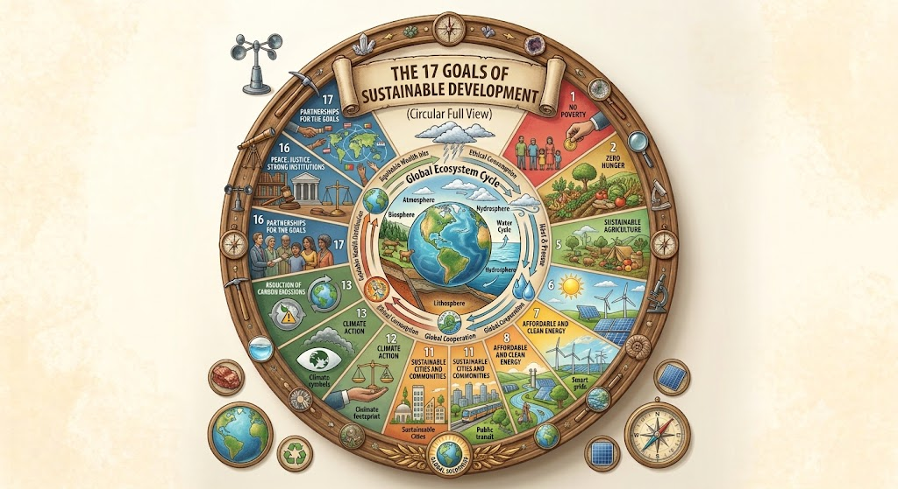
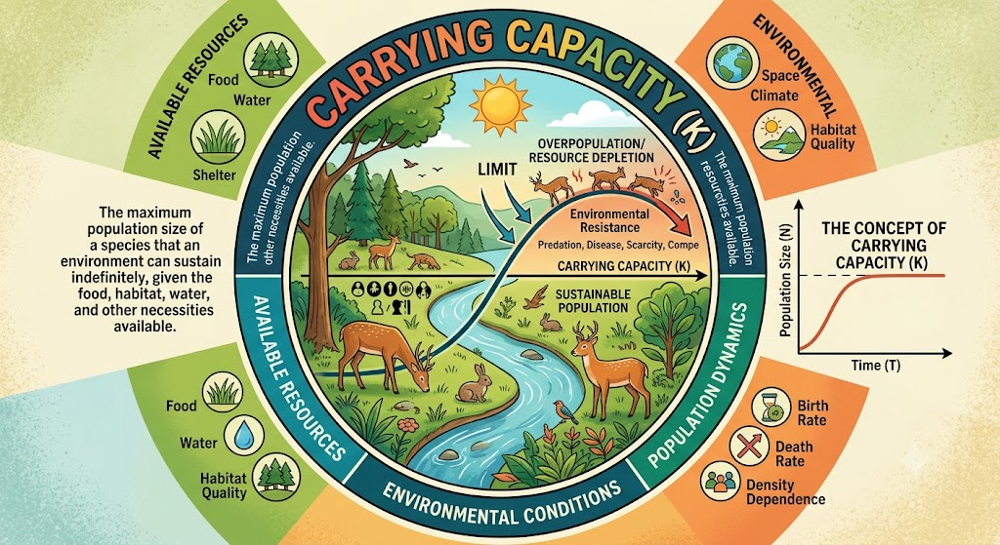

⇒ Environment is the total of all living and non-living components surrounding an organism and influencing its life.
⇒ Environment is the total of all living and non-living components surrounding an organism and influencing its life.
For example, a human being is influenced by:
⬤ Air
⬤ Water
⬤ Soil
⬤ Temprature
⬤ Plant
⬤ Animal
So, environment is much more than nature. It includes both natural and human-made surroundings.
The environment can mainly be divided into two major components:
ENVIRONMENT
┌────────────┴────────────┐
BIOTIC ABIOTIC
(LIving) (Non LIving)
→ piants, Animal, → Air, Water, soil,
Microorganisms, Temprature, Light,
Humans, etc. Mineral, etc.
→ Biotic means living components.
⬤ Humans
⬤ Animal
⬤ Plants
⬤ Bacteria
⬤ Fungi
⬤ Microorganisms
→ Abiotic means non-living components.
⬤ Air
⬤ Water
⬤ Soil
⬤ Sunlight
⬤ Temprature
⬤ Humidity
⬤ Ninerals
⬤ Rocks

1. Atmosphere
2. Hydrosphere
3. Lithosphere
4. Biosphere
→ Imagine Earth surrounded by a huge invisible blanket of gases. That blanket is called the atmosphere.
⬤ Nitrogen
⬤ Oxygen
⬤ Argon
⬤ Carbon dioxide
⬤ Water Vapour
⬤ Small amounts of other gases

1. Troposphere
2. Startosphere
3. Mesosphere
4. Thermosphere
5. Exosphere
→ The troposphere is the lowest layer of the atmosphere.
⬤ Extends from Earth's surface to roughly 8–18 km, depending on latitude and season.
⬤ Contains most of the atmosphere's mass.
⬤ Contains most atmospheric water vapour.
⬤ Almost all ordinary weather occurs here.
→ The stratosphere lies above the troposphere, approximately from 12 to 50 km altitude.
⬤ The stratosphere contains the ozone layer, which absorbs much of the Sun's harmful ultraviolet (UV) radiation.
⬤ Unlike the troposphere, temperature generally increases with altitude in the stratosphere because ozone absorbs UV radiation.
⬤ Protects living organisms from excessive UV radiation.
⬤ Relatively stable atmospheric conditions.
→ The mesosphere extends approximately from 50 to 85 km.
⬤ It is the layer where many incoming meteoroids burn up because of collisions with atmospheric gases.
⬤ Temperature generally decreases with altitude and reaches very low values near the mesopause.
→ The thermosphere extends roughly from 85 km upward to several hundred kilometres.
⬤ Temperatures can become very high because of absorption of high-energy solar radiation.
⬤ Contains part of the ionosphere.
⬤ Auroras occur in this region.
⬤ Some spacecraft and satellites operate within or pass through this region.
→ The exosphere is the outermost layer of Earth's atmosphere.
It contains extremely sparse gases, mainly:
⬤ Hydrogen
⬤ Helium

→ The scope of environment means the different areas or aspects covered while studying the environment.
⬤ you can understand the scope through the following major areas.
⬤ WAter
⬤ Forests
⬤ Soil
⬤ Mineral
⬤ Food
⬤ Energy
⬤ Land

⬤ Ecosystem structure
⬤ Producers
⬤ Consumers
⬤ Decomposers
⬤ Food chains
⬤ Food webs
⬤ Energy flow
⬤ Nutrient cycles
⬤ Variety of plants and animals
⬤ Genetic diversity
⬤ Species diversity
⬤ Ecosystem diversity
⬤ Endangered species
⬤ Biodiversity conservation

⬤ Air pollution
⬤ Waste pollution
⬤ Soil pollution
⬤ Noise pollution
⬤ Thermal pollution
⬤ Radioactive pollution
⬤ Solid Waste
⬤ Plastic Waste
⬤ Industrial Waste
⬤ Biomedical Waste
⬤ Hazardous Waste
⬤ E-waste
⬤ Greenhouse effect
⬤ Global Warming
⬤ Climate Change
⬤ Carbon footprint
⬤ Greenhouse gases
⬤ Climate adaptation and mitigation
Air pollution → Respiratory problems
Water pollution → Water-borne diseases
Noise pollution → Hearing and stress-related effects
⬤ Pollution control
⬤ Forest conservation
⬤ Wildfire protection
⬤ Industrial activities
⬤ Environmental protection
⬤ Dams
⬤ Highways
⬤ Airports
⬤ Industries
⬤ Mining projects
⬤ Power plants
Economic growth + Social well-being + Environmental protection
→ Meet present needs without compromising the needs of future generations.

→ Sustainability means using resources and developing society in such a way that we can satisfy our present needs without destroying the ability of future generations to satisfy their needs.
"Use today, but don't destroy tommorow."
Humans depend on nature for:
⬤ Water
⬤ Food
⬤ Energy
⬤ Forests
⬤ Minerals
⬤ Land
⬤ Clean air
But human activities are increasing rapidly:
Population → Industrialization → Urbanization → More resource use → More pollution
If we continue using resources without limits, we may face:
⬤ Resource depletion
⬤ Water scarcity
⬤ Deforestation
⬤ Pollution
⬤ Biodiversity loss
⬤ Land
⬤ Climate Change
Therefore, we need sustainable development.
SUSTAINABILITY
┌────────────┼────────────┐
ECONOMIC SOCIAL ENVIRONMENTAL
DEVELOPMENT WELFARE PROTECTION

Economic sustainability means maintaining economic growth and development without exhausting resources or creating unacceptable long-term environmental costs.
Social sustainability means improving the quality of life and ensuring fairness and well-being for people.
Environmental sustainability means protecting natural systems and using natural resources within their long-term limits.
Reduce → Reuse → Recycle
⬤ Reduce:Use fewer resources.
⬤ Recycle:Use an item again instead of throwing it away.
⬤ Recycle:Convert waste materials into useful materials.
Plastic bottle → Reduce plastic use → Reuse bottle where appropriate → Recycle properly
→ The goal or condition of maintaining environmental, social and economic well-being over the long term.
→ The process of development that attempts to achieve that goal.
→ Sustainable development is development that meets the needs of the present generation without compromising the ability of future generations to meet their own needs.
⬤ Sustainability = Goal
⬤ Sustainable development = Way/process to achieve the goal

1. No Poverty
2. Zero Hunger
3. Good Health and Well-being
4. Quality Education
5. Gender Equality
6. Clean Water and Sanitation
7. Affordable and Clean Energy
8. Decent Work and Economic Growth
9. Industry, Innovation and Infrastructure
10. Reduced Inequalities
11. Sustainable Cities and Communities
12. Responsible Consumption and Production
13. Climate Action
14. Life Below Water
15. Life on Land
16. Peace, Justice and Strong Institutions
17. Partnerships for the Goals

Carrying capacity is an important concept in ecology, population studies and sustainable development.
→ Carrying capacity is the maximum population of a particular species that an environment can support for a long period of time with the available resources, without causing serious environmental damage.
🟔🟔🟔🟔🟔🟔🟔🟔🟔🟔🟔🟔🟔🟔🟔🟔🟔🟔🟔🟔🟔🟔🟔🟔🟔🟔🟔🟔🟔🟔🟔🟔🟔🟔🟔